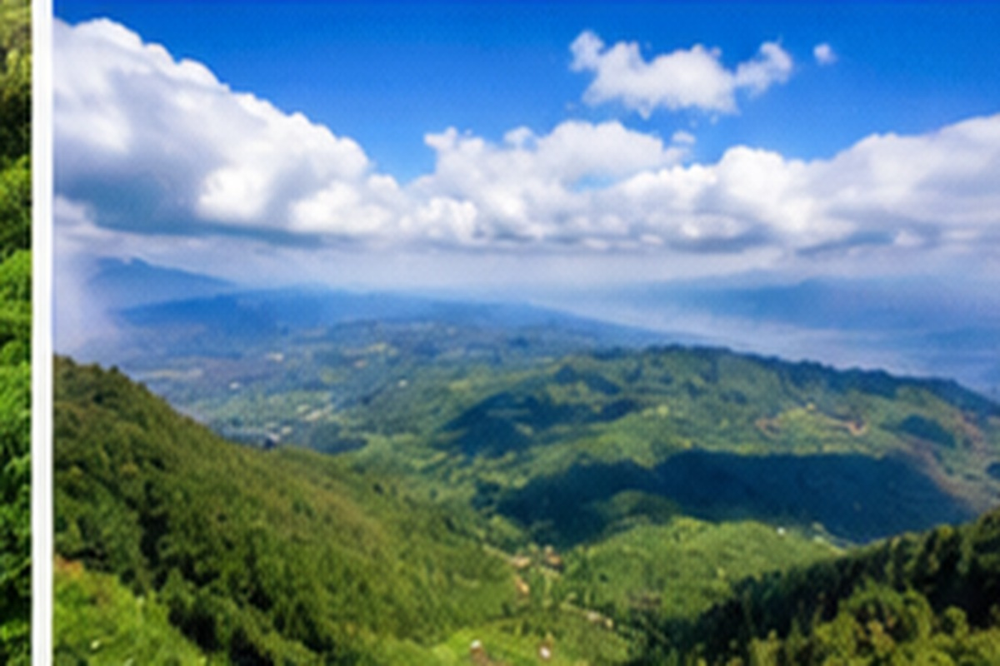
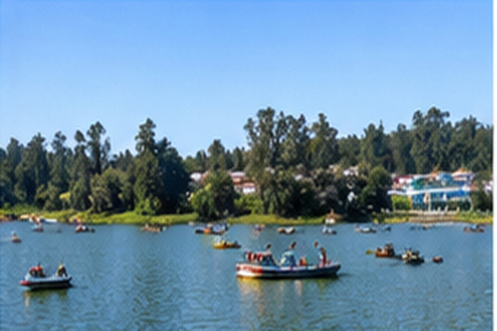
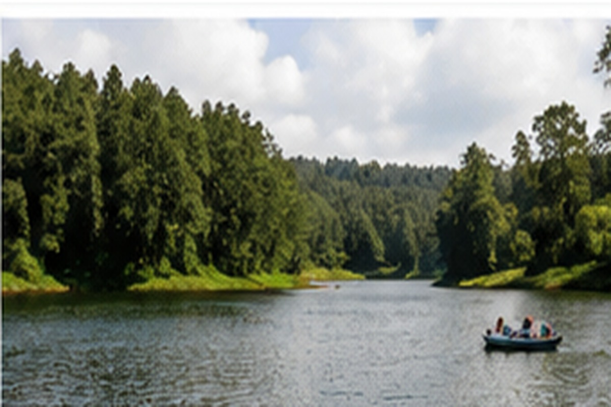
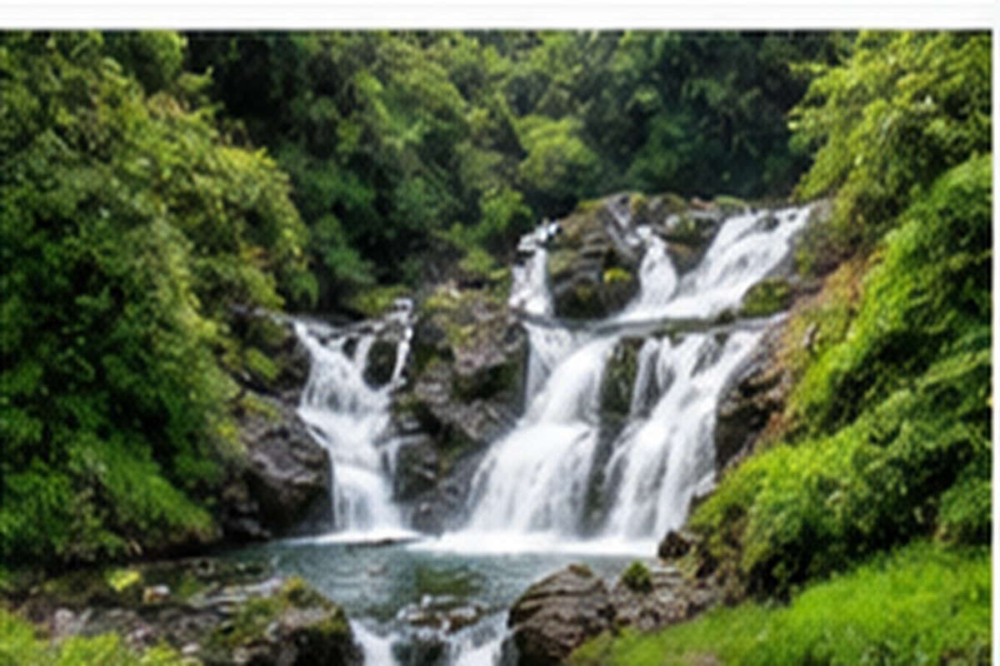
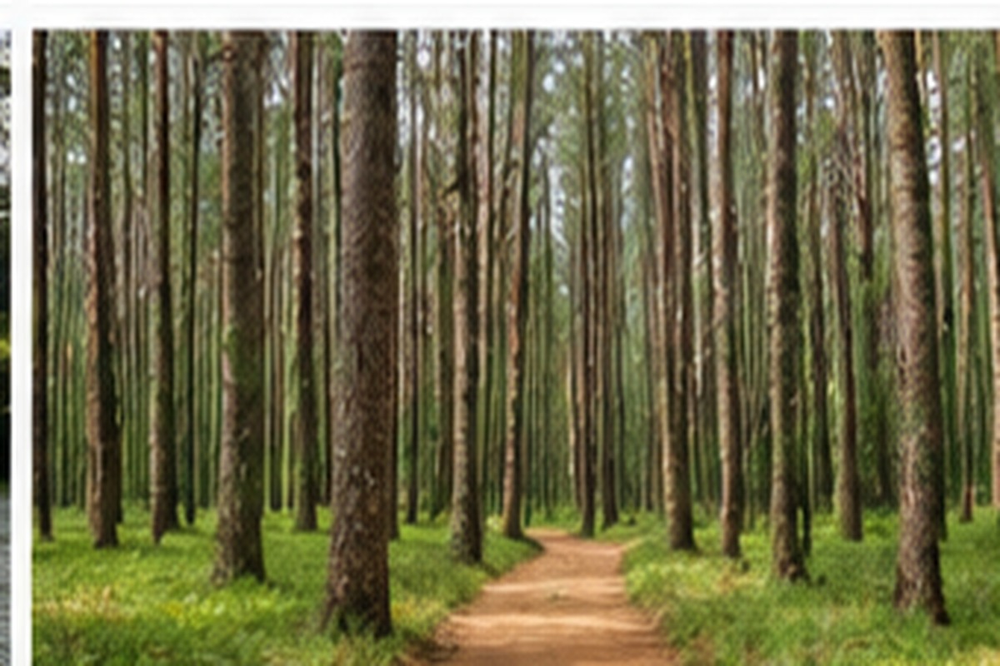
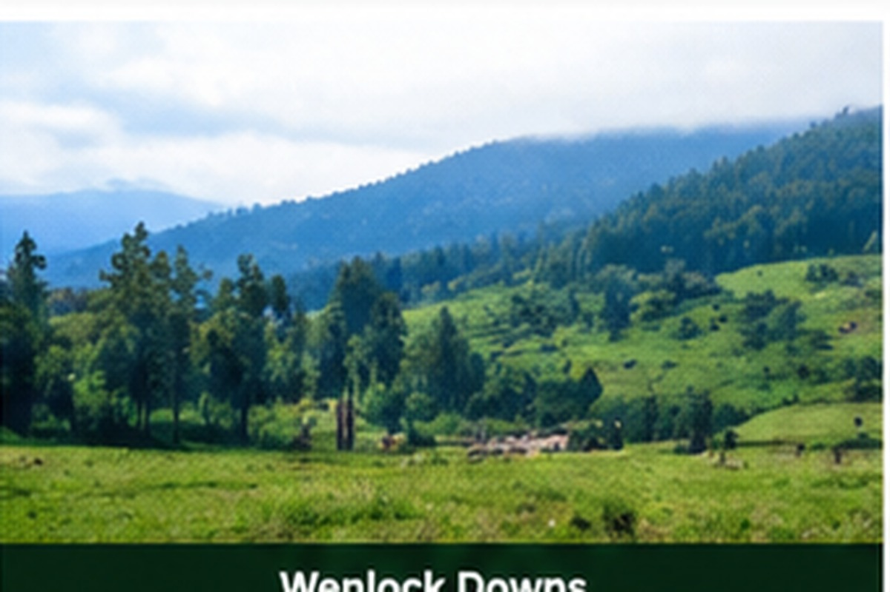
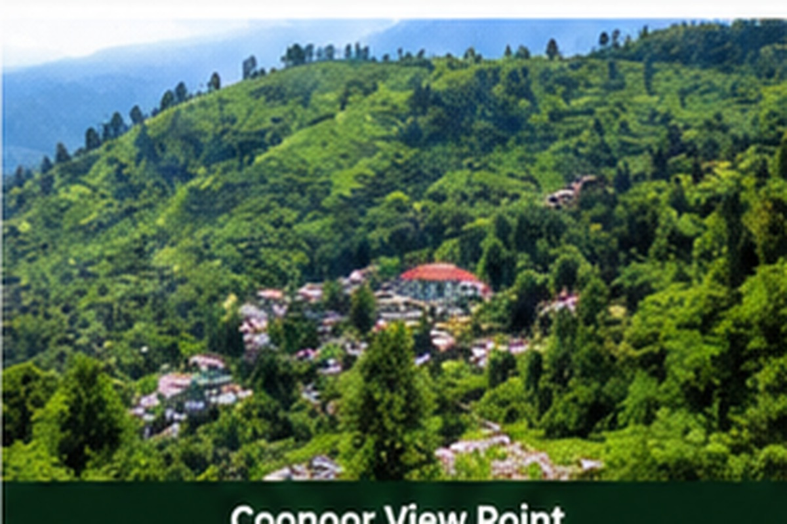
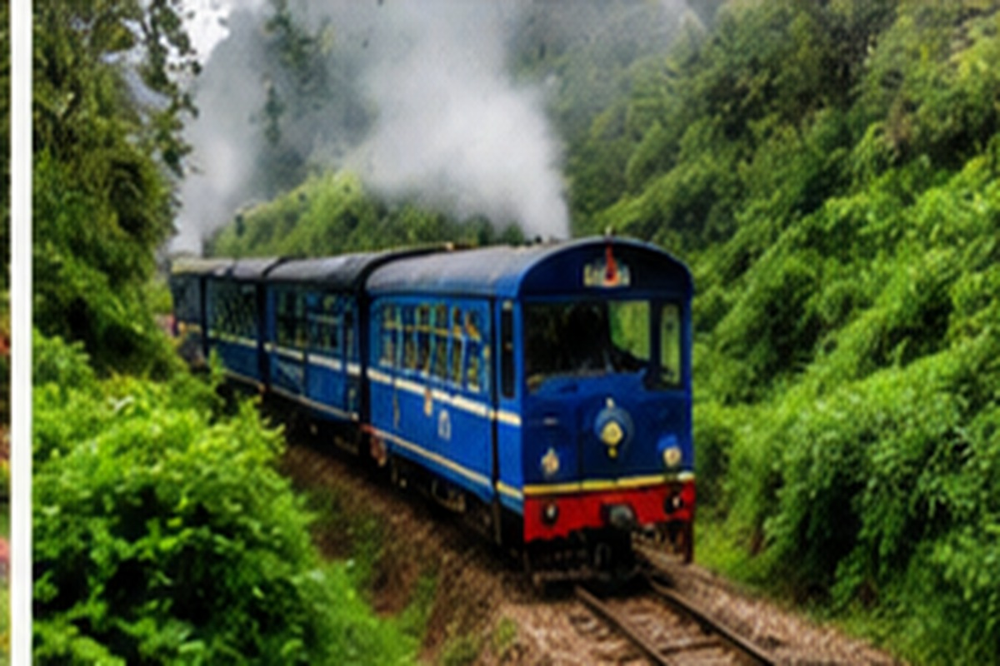
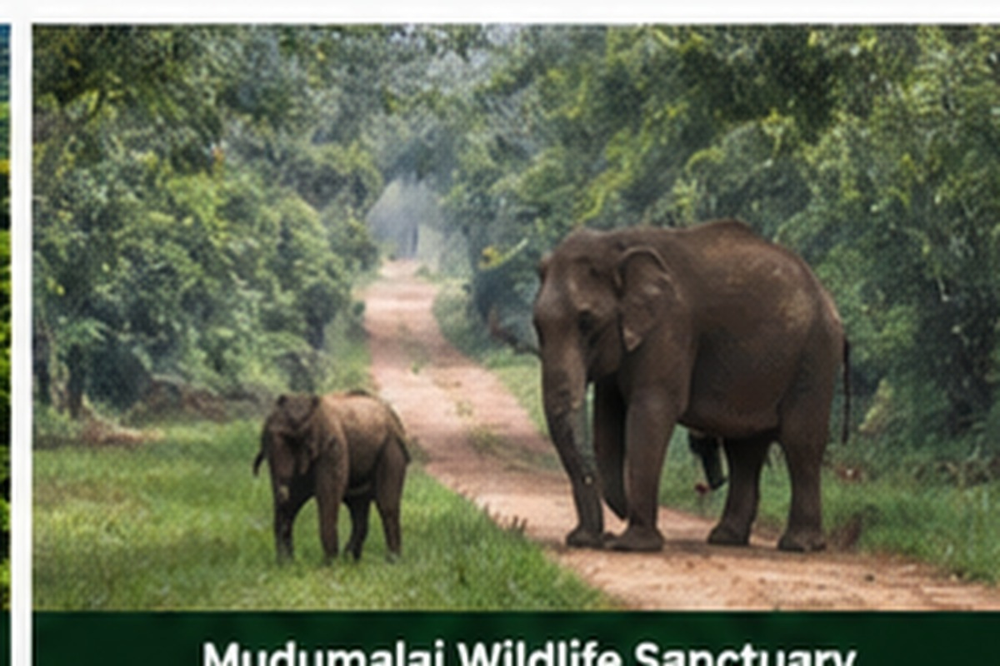
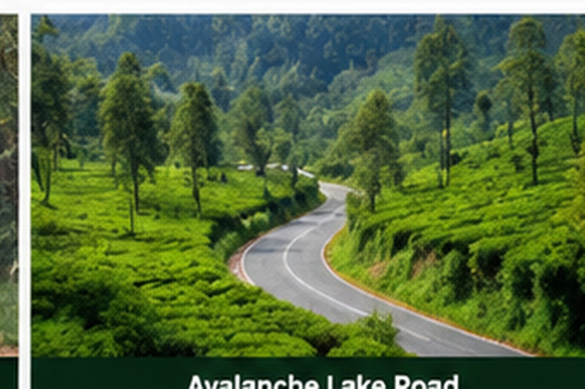

Ooty Cabz Taxi Service
Reliable private taxi service for Ooty sightseeing, Coonoor, Pykara, Mudumalai, Avalanche, Coimbatore Airport transfers, Mettupalayam transfers and outstation trips.
Book a reliable Ooty taxi for local sightseeing, Nilgiris tours, airport transfers and outstation travel.
Full-day private taxi covering Doddabetta Peak, Tea Factory & Museum, Chocolate Factory, Eagle Dare Adventure, Wax Museum, Botanical Garden, Rose Garden, Ooty Boat House, Thread Garden and Tribal Shop shopping.
Valley View Point, Madras Regimental Centre outside view, Golf Club outside view, Sims Park, Tea Gardens, Tea Factory & Museum, Oil Factory, Lamb's Rock, Dolphin's Nose, Catherine Falls View and Sleeping Lady View Point.
Ooty Gymkhana Club outside view, Pine Tree Forest, Kamaraj Sagar Dam, Tree Park, Ninth Mile Shooting Spot, Wenlock Downs, Pykara Waterfalls, Pykara Dam and Pykara Boat House.
Travel from Ooty towards Mudumalai, Masinagudi and the Nilgiri forest region. Safari assistance can be arranged separately.
Enjoy scenic mountain roads, forests and the peaceful Avalanche region near Ooty.
Private taxi transfers between Ooty, Coimbatore Airport and Mettupalayam Railway Station.
Clear seasonal pricing for popular sightseeing and transfer services. No hidden charges.
Sedan tariff. Fuel and driver allowance are included in the quoted taxi fare. Entry tickets, boating, adventure activities, safari tickets and personal expenses are not included.
Air conditioning is available during the plains journey. On the ghat road section between Mettupalayam and Ooty, the AC will be switched OFF temporarily for vehicle safety and better engine performance while climbing the hill roads. Thank you for your understanding and cooperation.
Explore some of the most popular tourist attractions with a local Ooty taxi.

Panoramic mountain views from the highest peak in the Nilgiris.
A beautiful garden and one of Ooty's popular attractions.

Enjoy boating and relaxing views at the famous Ooty Lake.
See beautiful varieties of roses at the famous Ooty Rose Garden.

A scenic lake surrounded by beautiful Nilgiri hills.

Visit the beautiful Pykara Waterfalls during your Ooty trip.

A peaceful and scenic forest location near Ooty and Pykara.

Beautiful green grasslands and mountain scenery near Pykara.

Explore beautiful viewpoints and tea gardens around Coonoor.

Experience the famous Nilgiri Mountain Railway through the hills.

Explore the forests and wildlife region around Mudumalai.

Enjoy peaceful mountain scenery and beautiful roads around Avalanche.
Visit the iconic Adiyogi statue and Isha Yoga Center near Coimbatore, surrounded by the scenic foothills of the Velliangiri Mountains. Adiyogi can be included in an Ooty–Coimbatore travel plan or custom taxi trip.
Custom trip • Fare depends on pickup, drop, passengers and vehicle
A few simple suggestions from Ooty Cabz to make your sightseeing day comfortable.
Ooty weather can change quickly, so keep an umbrella with you during sightseeing.
Many attractions involve walking, steps and some light trekking. Comfortable sports shoes are recommended.
Choose loose, comfortable clothing that makes walking easy. Avoid very tight clothes during a full day of sightseeing.
Ooty can be cool, especially in the mornings and evenings.
Please avoid banned single-use plastic bottles and carry your own reusable water bottle.
Please do not carry banned plastic carry bags into the Nilgiris. A reusable cloth or jute bag is a better choice.
Please help keep Ooty and the Nilgiris clean and green. Avoid banned plastic carry bags and other prohibited single-use plastic items. Carry reusable alternatives wherever possible.
A small request from Ooty Cabz: Please help us keep Ooty clean, green and beautiful for everyone.
Don't just visit Ooty — experience Ooty! Enjoy local food, cafés, Nilgiri tea, homemade chocolates and traditional products during your trip.
Discover vegetarian and South Indian food, family restaurants, cafés, bakeries, multi-cuisine dining and homemade chocolate shops.
Relax during your Coonoor sightseeing trip with local cafés, tea-estate experiences, family restaurants and vegetarian dining.
Take home a taste of the Nilgiris with local products and traditional gifts.
Explore popular shopping areas while travelling around Ooty.
Enjoy the hills, tea gardens, local food, homemade chocolates, Nilgiri tea and traditional products. Ooty Cabz can help you plan convenient food stops and shopping during your sightseeing route.
🚕 We Drive, You Enjoy!
Before leaving Ooty, consider taking home local tea, fresh Ooty Varkey, homemade chocolate or a traditional local product as a memorable souvenir.
Restaurant and shop timings, availability and operating status can change. Please check before visiting.
Send your trip details and we will prepare a taxi quote for you.
Simple, direct taxi booking with local knowledge of Ooty and the Nilgiris.
Practical travel guidance for Ooty and nearby Nilgiris attractions.
Comfortable taxi service for families, couples and groups.
Plan your route efficiently and make the most of your sightseeing day.
Call or WhatsApp directly to discuss your travel requirements.
See what travellers say about their experience with Ooty Cabz Taxi Service on Google.
View Google Reviews